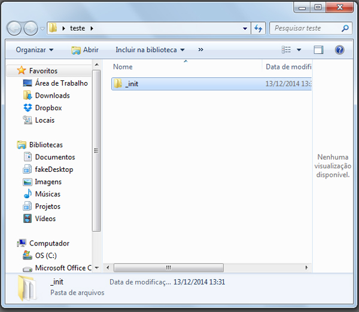
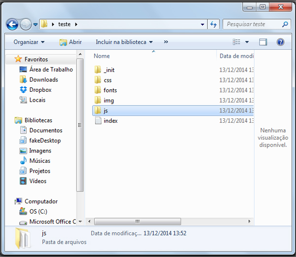

WM Tasks - Tarefas automatizadas
Guia de uso da WM Tasks
Antes de mais nada instale o necessário
É válido lembrar que para usar o WM Tasks você precisa ter um ambiente preparado. Isso implica em ter instalados os seguintes itens:
Não é o objetivo desta página ensinar a instalação de cada um desses componentes.
Baixando WM Tasks
Você poderá baixar a WM Tasks juntamente com a documentação no github clicando aqui
Após o download o único diretório realmente importante para começar a usar o WM Tasks é o diretório _init. Você pode copia-lo para a raíz de seu projeto.

Usando as tasks
Baixando dependencias do GruntJs
Primeiramente baixe as dependências do GruntJs. Essas dependencias estão listadas no arquivo package.json. Executo no prompt, apartir do diretório _init, o seguinte comando:
npm install
Baixando dependencias do Bower
Agora baixe as dependências do Bower. Essas dependencias estão listadas no arquivo bower.json. Executo no prompt, apartir do diretório _init, o seguinte comando:
bower install
Criando diretórios e arquivos básicos
Agora crie os diretórios e arquivos básicos para o desenvolvimento do front. Executo no prompt, apartir do diretório _init, o seguinte comando:
grunt wm-mkd
O resultado é como segue:

Aplicando as tarefas
Agora aplique as tarefas configuradas no WM Tasks. Executo no prompt, apartir do diretório _init, o seguinte comando:
grunt wm-app
Todas as tarefas registradas e configuradas encontram-se no arquivo Gruntfile.js
Aplicando as tarefas usando wathc
Sempre que algum arquivo .js o .scss sofrer alguma alteração serão executadas as tarefas configuradas no WM Tasks. Para que isso ocorra executo no prompt, apartir do diretório _init, o seguinte comando:
grunt watch